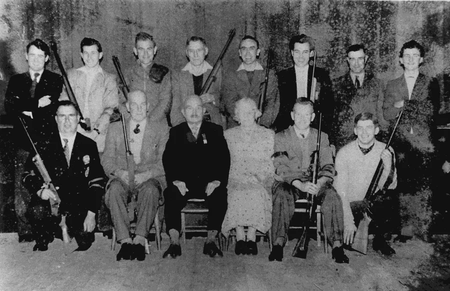
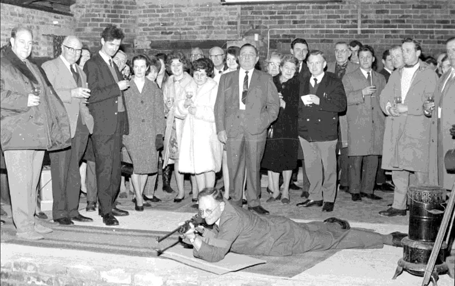
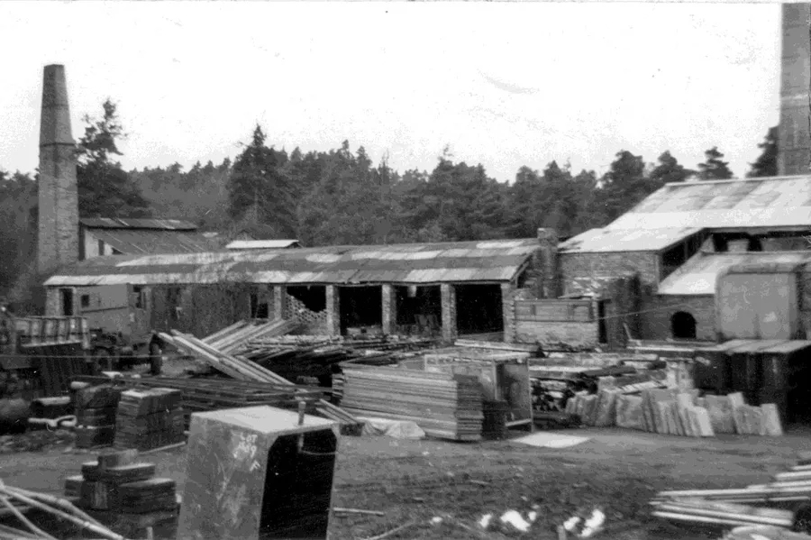
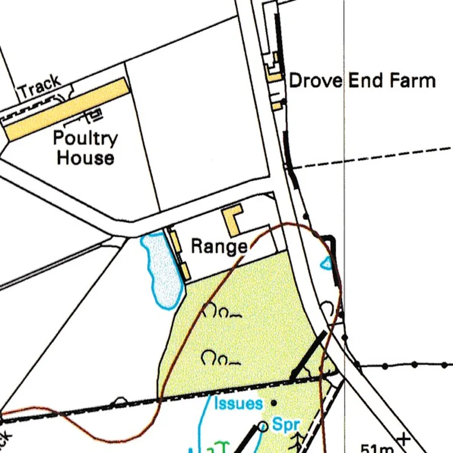
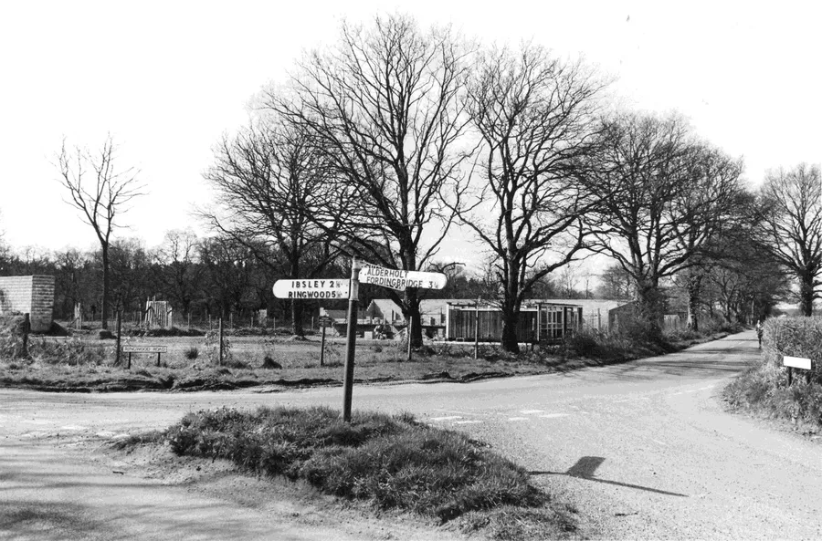
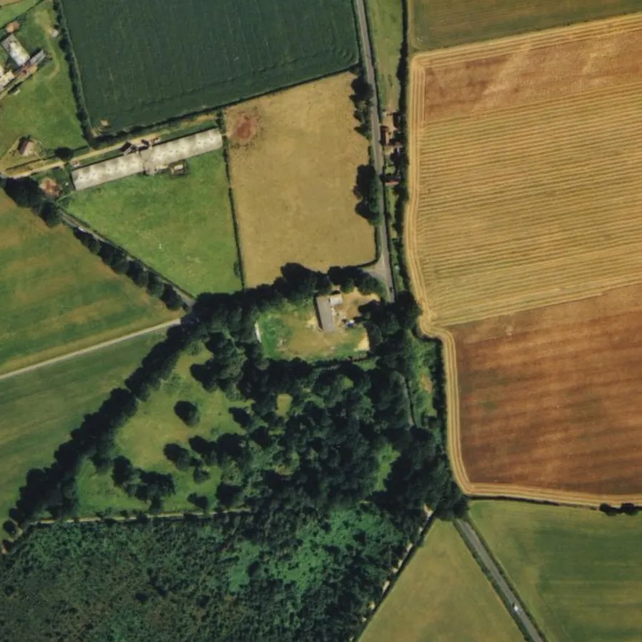

Alderholt Rifle Club
by Stuart Rose

Alderholt Rifle Club was born out of the Home Guard Unit operating in the Second World War and was founded in 1947.
The Club used a 15-yard indoor range in the Village Hall which was an army hut built in the First World War and was moved to Alderholt from Hurn after WW1 ended.
There was also a Home Guard Unit in Verwood but they had no indoor range so they joined in with Alderholt. This worked very well because Verwood had an outdoor range on the common at Stephens Hill which was used in the summer months.

Back Row L to R — John Bamsey, Ian Marsden, Arthur Rose, George Beale, John Crawford, Bernard Fox, Ron Shearing and John Loader.
Front Row L to R — Ernie Price, Frank Moulson, Mr. and Mrs. Smith, George Bailey (Secretary) and John Eyres.
The Club was affiliated to the National Small-bore Rifle Association (NSRA) who were the controlling body of the sport and organised the National competitions. There were also County Associations in this case Dorset but also Hampshire as well and Alderholt could belong to both.
The Club became successful both as a team but individually as well in winning competitions. Membership also increased and had up to eight teams in winter leagues.
When the new Village Hall was planned in early 1960’s the club felt it was time to move on as it was preferring to upgrade to a 25-yard indoor range.
Major Kimball who owned Alderholt Park Estate at the time was approached to see if the Club could build a Range in the old brickyard site next to the Churchill Arms Pub. He was most enthusiastic being an ex-military man but also his son was an MP. The House of Commons also had a Rifle Club of which he was a member.

The site of the derelict drying shed was used. All the bricks on the site were available to use and over the course of 18 months of voluntary work the 25-yard range was built and passed by the authorities. The agreed terms with Major Kimball were a 21-year Lease one shilling a year.
The Rifle Club hadn’t been operating there for long when Major Kimball sold the Estate. The Estate was sold by Auction and broken up into separate lots and the Old Brickyard site was one Lot.
Nothing changed for a while with the Lease being a legal agreement but in due course the new owner of the Brickyard site notified the Club that the lease would not be renewed. This meant that at some point the Club would need a new home.

Earlier the outdoor range in Verwood had been deemed unsafe as by now a safety certificate was required for such outdoor ranges. The Club had negotiated with East Dorset District Council to lease the old gravel pit at the junction of Hillbury Road and Ringwood Road. A safety Wall (butt) wall was built as well as other safety barriers to get the necessary Safety Certificates.
The new range covered both 100 yards and 50 yards distances. By the early 1980's the new outdoor range was in use, and it was decided to build an indoor range there as well.
The Club had built itself into something quite special and were starting a Pistol section. Also the plan was to hold inter Club and inter County Competitions there.

Among the membership was a man who had connections with personnel at Southern Television which was part of the ITV network. Discussions were taking place with regard to televising large events as the ITV network were looking to promote lesser-known sports.
Before any of that had actually happened, disaster struck the sport. Two incidents in the UK happened that changed everything within the sport. A shooting massacre in Hungerford in 1987 and another in Dunblane in 1996 with serious loss of life.
The perpetrators in both incidents were members of Gun Clubs and as a result the regulations governing all such clubs were modified and tightened. Safety issues were intensified both with regard to holders of firearms and club operations.

As a result many of the shooting fraternity gave up the sport and in Alderholt’s case the outdoor range had to be extensively upgraded to continue to comply with safety regulations and attain a new certificate.
The expense of that was beyond the Club, membership dwindled and in the end the Rifle Club closed. All the ideas of televising the Sport were gone as were the plans of holding international competition there.
The sad part of this is that in at least one of these terrible shooting incidents the perpetrator had been reported to the authorities as being unfit to hold firearms. However the information was not acted upon properly. The opportunity was there to ensure that these terrible tragedies should never have happened but as a result it changed the sport of target shooting for ever.

Stuart Rose – 3rd March 2025. Edited by Adrian King.